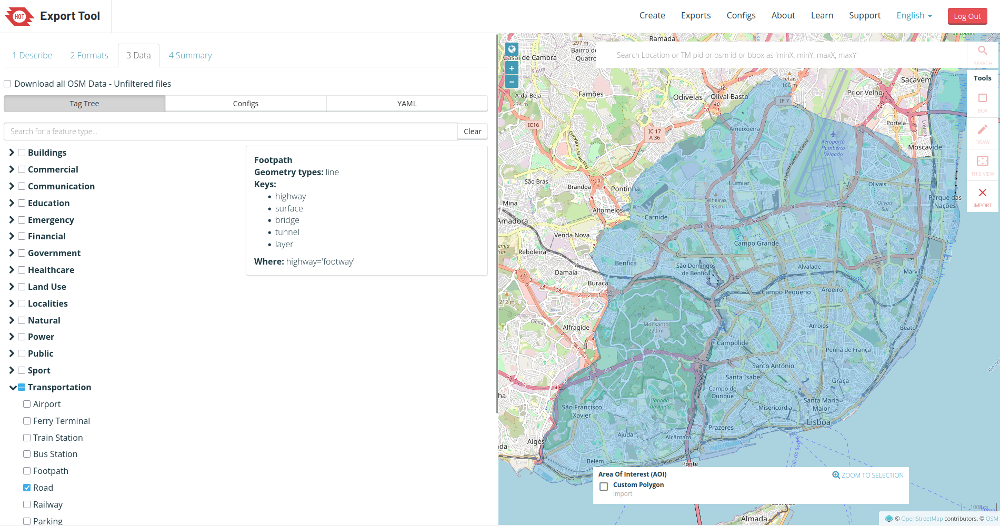
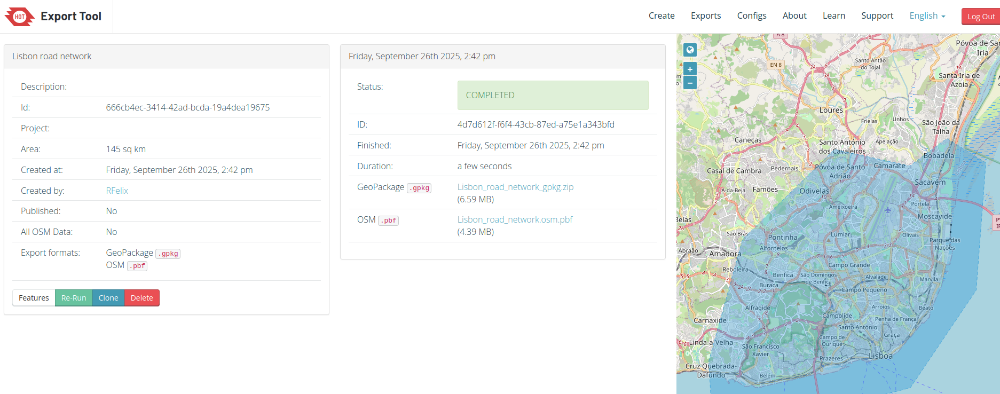

Lisbon_roads = sf::st_read("data/Lisbon/REDEbase_Lx.gpkg", quiet = TRUE)
mapview::mapview(Lisbon_roads, zcol = "highway")Network setup
In this chapter we will guide you through the data requirements, data collection, and setting up a multi-modal network with r5r.
Data requirements
You will need R and r5r (Pereira et al. 2021) package installed on your computer.
r5r sets-up a network file .dat by combining the following datasets in the same folder:
- Road Network (OpenStreetMap1 as
.osm.pbf) - GTFS2 from PTransit operators (a single
.zipor several) - Digital Elevation Model3 (
.tif), to consider impedances for walking and cycling
For the documentation of data needed, see r5r::build_network
Road Networks
OpenStreetMap
The OpenStreetMap is a collaborative online mapping project that creates a free editable map of the world.
This is the most used source of road network data for transportation analysis in academia, since it is available almost everywhere in the world, is open and free to use.
Although it can be not 100% accurate, OSM is a good source of data for most of the cases.
You can access it’s visualization tool at www.openstreetmap.org. To edit the map, you can use the Editor, once you register.
If you want to download the data, you can use the following tools.
These websites include all the OSM data, with much more information than you need.
HOT Export Tool
This interactive tool helps you to select the region you want to extract (or import an existing city_limit.geojson4), the type of information to include, and the output data format.
Access via export.hotosm.org5. Select format as .gpkg and .pbf.


After the export, you can read in R using the sf package:
OSM in R
There are also some R packages that can help you to download and work with OpenStreetMap data, such as:
This is an example of how to download OpenStreetMap road network data using the osmextract package:
library(osmextract)
OSM_Malta = oe_get_network(place = "Malta") # it will geocode the place
Malta_main_roads = OSM_Malta |>
filter(highway %in% c("primary", "secondary", "tertiary", "trunk"))
plot(Malta_main_roads["highway"])
Transportation Services’ Data
GTFS
General Transit Feed Specification (GTFS) is standard format for documenting public transportation information, including: routes, schedules, stop locations, calendar patterns, trips, and possible transfers. Transit agencies are responsible for maintaining the data up-to-date.
This information is used in several applications, such as Google Maps, to provide public transportation directions. It can be offered for a city, a region, or even a whole country, depending on the PT agency.
The recent version 2 of the GTFS standard includes more information, such as real-time data.
The data is usually in a .zip file that includes several .txt files (one for each type of information) with tabular relations.

Online sources
You can find most GTFS data in the following websites:
Some PT agencies also provide their open-data in their websites.
R packages
There are some nice R packages to read and manipulate GTFS data, such as:
Be aware that they may share the same function names, so it is important to use of of them at the time.
National Access Points
The European Union has a directive that requires the member states to provide access to transportation data. Data includes not only Public Transportation data, but also road networks, car parking, and other transportation-related information.
List of the European Union members states with National Access Points for Transportation data
Example of Bus services data in Belgium:

Elevation
This information is useful if your city is somehow hilly, and you are modelling pedestrian and/or bike travel.
In the following websites you can export a raster file of Digital Elevation Model (DEM) in .tif format:
- elevatr R package
- Nasa’s SRTMGL1 website
- Copernicus EU website
Verify in R
dem = terra::rast("data/Lisbon/Copernicus_30m.tif") # rename the extension to .tif !!
terra::plot(dem)Setting up a routable transport network
Your folder should contain these files, such as:
# Load packages
library(tidyverse)
library(sf)
options(java.parameters = '-Xmx8G') # allocate memory for 8GB
library(r5r)data_path= "data/Lisbon/r5r" # relative path to your folder containing the required data
network = build_network(
data_path,
elevation = "TOBLER" # optional. MINETTI or NONE
)If you already have a network.dat file, it will use that pre-build network.
Check if your transportation network is correct:
transit_net = transit_network_to_sf(r5r_lisboa)
mapview::mapview(transit_net$routes, zcol = "mode")References
Pereira, Rafael H. M., Marcus Saraiva, Daniel Herszenhut, Carlos Kaue Vieira Braga, and Matthew Wigginton Conway. 2021. “R5r: Rapid Realistic Routing on Multimodal Transport Networks with r ⁵ in r.” Findings, March. https://doi.org/10.32866/001c.21262.
Footnotes
See how to export an area with HOT export tool.↩︎
Optional.↩︎
Optional.↩︎
For instance, see here for Germany: https://opendatalab.de/projects/geojson-utilities/↩︎
You need an OSM account to use it.↩︎